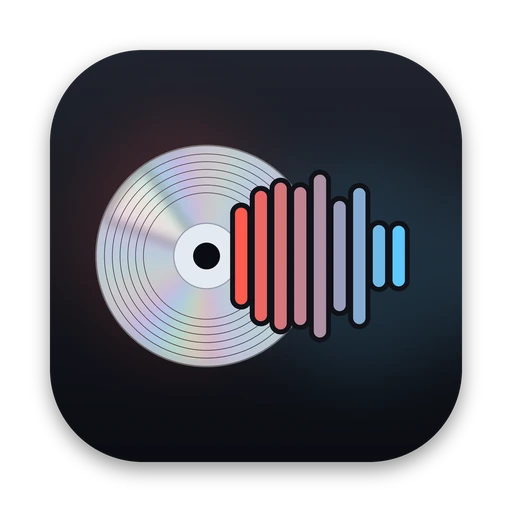

Every format, nothing hard-coded
MP3, AAC, FLAC, Opus, Vorbis, WavPack, Monkey's Audio and every other encoder fre:ac ships with. New fre:ac versions and codecs show up on their own.

frickossThe free audio converter · a dustalexw app
Every format fre:ac speaks, in a native Mac window.
MP3, AAC, FLAC, Opus and more, plus CD ripping, cue sheets and SuperFast.
Needs fre:ac (free)
Version 1.0.0
frickoss is a Mac app. Open this page on your Mac to download it.
Pick a format and its options with native controls, and the exact fre:ac command updates at the bottom of the window, ready to copy into Terminal.
frickoss asks fre:ac which encoders it has and what each one accepts, then builds real Mac controls for them. Here's what's inside.
MP3, AAC, FLAC, Opus, Vorbis, WavPack, Monkey's Audio and every other encoder fre:ac ships with. New fre:ac versions and codecs show up on their own.
CDDB track names, pick the tracks you want, and eject the disc when it's done.
Options left at fre:ac's defaults stay off the command line, so what runs is exactly what you chose.
One combined file with chapters, cue sheets, playlists, cover art, and SuperFast multi-core conversion.
fre:ac's patterns, like <artist>/<album>/<track> - <title>, with presets and one-click tokens.
The live command at the bottom of the window can be copied straight into Terminal.
A SwiftUI app for macOS 13 and later. frickoss remembers what your copy of fre:ac can do, so it opens straight away and only checks again when fre:ac is updated.
frickoss is a front end: the converting is done by fre:ac itself, so you need both. They're both free.
On an Intel Mac, or if you'd rather compile it: you need Swift 5.9 or later (Xcode, or xcode-select --install).
git clone https://github.com/dustalexw/frickoss cd frickoss ./build.command # builds and opens build/frickoss.app ./build.command install # also copies it to /Applications
macOS